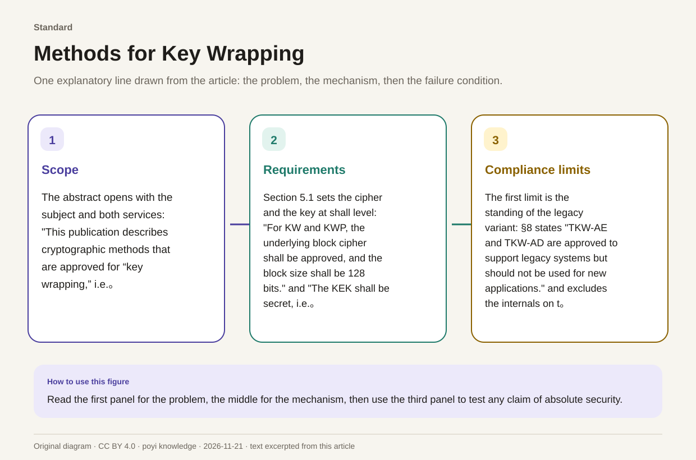
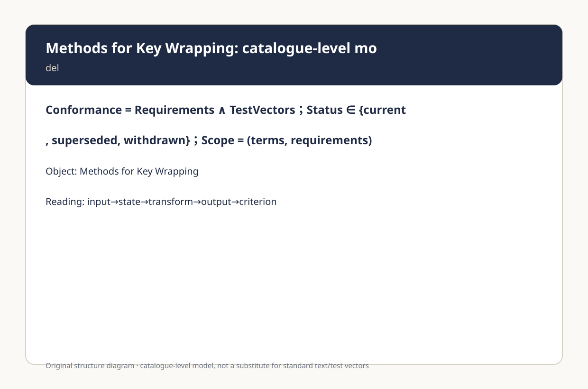

Principles
Standard: Methods for Key Wrapping (密钥包装方法). The abstract opens with the subject and both services: "This publication describes cryptographic methods that are approved for “key wrapping,” i.e., the protection of the confidentiality and integrity of cryptographic keys." The second sentence names what is new: "this publication specifies two new, deterministic authenticated-encryption modes of operation of the Advanced Encryption Standard (AES) algorithm: the AES Key Wrap (KW) mode and the AES Key Wrap With Padding (KWP) mode." The third keeps one for older systems: "An analogous mode with the Triple Data Encryption Algorithm (TDEA) as the underlying block cipher, called TKW, is also specified, to support legacy applications." Clause 1 compresses the purpose: "The purpose of this part is to provide approved methods for key wrapping, i.e., the protection of cryptographic keys." The three names are the output of this part, two AES modes plus one TDEA analogue, with the protected object stated as the keys themselves; how those keys are generated is not addressed here.

Why it matters
Section 3.1 gives the design aim first: "KW, KWP, and TKW were designed to protect the confidentiality and the authenticity/integrity of cryptographic keys." Then the reasoning: "Each provides an option for protecting keys in a manner that is distinct from the methods that protect general data." and "Segregating keys from general data can provide an extra layer of protection." The same subsection immediately withdraws any necessity: "there is no requirement to protect cryptographic keys with a distinct cryptographic method." The robustness claim is stated as "each bit of output can be expected to depend in a nontrivial fashion on each bit of input", with the next sentence pricing it in throughput. What the document supplies is an approved way to keep keys in a separate protection regime, not an obligation to do so.
Applications
Section 5.1 sets the cipher and the key at shall level: "For KW and KWP, the underlying block cipher shall be approved, and the block size shall be 128 bits." and "The KEK shall be secret, i.e., disclosed only to parties that are authorized to know the protected information." Section 5.3.1 sets the length ceiling: "the plaintext for KW-AE shall be limited to fewer than 254 semiblocks" (254 here is 2 to the power 54, superscript lost). Conformance is claimed per function, six in all: §8 lists "An implementation may claim conformance to one or more of the following six functions: KWAE, KW-AD, KWP-AE, KWP-AD, TKW-AE, and TKW-AD." The validation route is in §2: "Conformance testing for implementations of this Recommendation will be conducted within the framework of the Cryptographic Algorithm Validation Program (CAVP) and the Cryptographic Module Validation Program (CMVP)." and the same clause fixes the wording level: "The requirements of this Recommendation are indicated by the word “shall.”" The levels run consistently: an approved cipher with a 128-bit block, a secret KEK, a capped plaintext length, conformance claimed function by function, and testing through the CAVP and the CMVP.

Limits & attacks
The first limit is the standing of the legacy variant: §8 states "TKW-AE and TKW-AD are approved to support legacy systems but should not be used for new applications." and excludes the internals on their own: "The associated wrapping and unwrapping functions, W, W-1, TW, and TW-1, are not approved for use independently of these six functions." The second is scope: §5.1 says "The management of KEKs is outside the scope of this publication." and §2 concedes a validation gap: "Some of these requirements may be out-of-scope for CMVP or CAVP validation testing, and thus are the responsibility of entities using, implementing, installing, or configuring applications that incorporate this Recommendation." The third is what determinism leaks: Appendix A.1 states "Each key-wrap algorithm in this Recommendation is deterministic: for a given designated cipher function and KEK, any invocation of the authenticated-encryption function on a given plaintext produces the same ciphertext." with the consequence "any pair of ciphertexts reveals whether the corresponding plaintexts are equal". Appendix A.5 records an external criticism: "the authors emphasize the lack of a proof that the underlying structure of KW meets the goal of deterministic authenticated encryption".
History
The running head reads "NIST Special Publication 800-38F December 2012", the title block carries the same December 2012 date with Morris Dworkin as author, and the citation line is "Natl. Inst. Stand. Technol. Spec. Publ. 800-38F, 30 pages (December 2012) CODEN: NSPUE2"; this copy contains no DOI line, and the part title is Methods for Key Wrapping. The acknowledgements list the reviewers and an early contributor: "The author wishes to thank his colleagues who reviewed drafts of this publication and contributed to its development, especially Elaine Barker, Meltem Turan, Allen Roginsky, Lily Chen, Donghoon Chang, Sharon Keller, Tim Polk, John Kelsey, Ray Perlner, Tim Hall, and Souradyuti Paul." plus "Heather Pearce worked extensively on early drafts of this publication." Section 3.2 gives the pre-standardisation timeline: "In 2001, NIST posted a document entitled “AES Key Wrap Specification”", "In 2002, two industry groups published specifications of key-wrap algorithms" and "In 2009, a different padding scheme was specified in RFC 5649 [4], referencing elements of the specification in [11]."
Worked example & verification
Formal model and reproduction steps
[S=\min_i S_i,\quad S_i\in{\text{密钥强度},\text{分组安全},\text{实现安全}}]
Methods for Key Wrapping: the registered public parameters, key material or randomness, and message are mapped through the stated transformation to an output checked against the registered criterion. The worked example is a structural reproduction, not a new test vector; parameter ranges, standard versions and implementation details remain source-bound.
References
- Wikipedia search entry for 密钥包装方法. https://zh.wikipedia.org/w/index.php?search=%E5%AF%86%E9%92%A5%E5%8C%85%E8%A3%85%E6%96%B9%E6%B3%95
- Handbook of Applied Cryptography (Menezes, van Oorschot, Vanstone). https://www.cacr.math.uwaterloo.ca/hac/